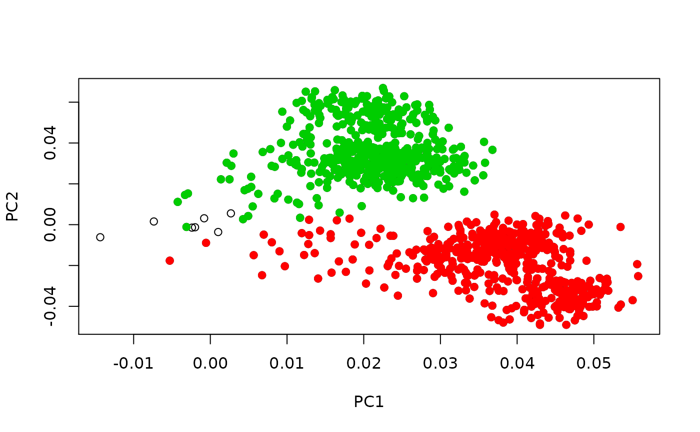
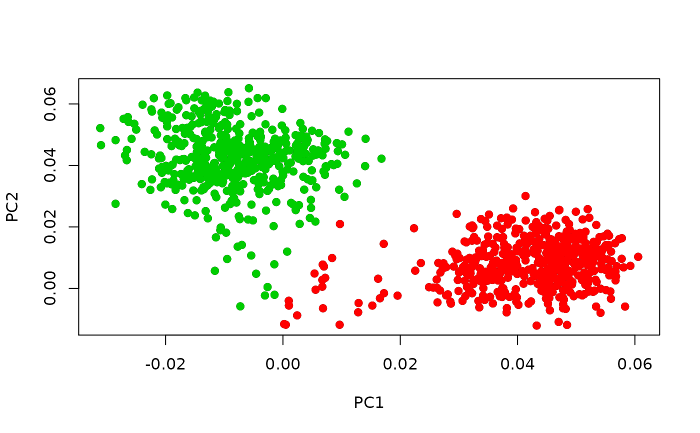

rcpp_mmutil_annotate_columns.RdAnnotate columns by marker feature information
rcpp_mmutil_annotate_columns( pos_labels, r_rows = NULL, r_cols = NULL, r_neg_labels = NULL, r_qc_labels = NULL, mtx_file = "", row_file = "", col_file = "", r_U = NULL, r_D = NULL, r_V = NULL, KAPPA_MAX = 100, TAKE_LN = FALSE, BATCH_SIZE = 10000L, EM_ITER = 100L, EM_TOL = 1e-04, VERBOSE = FALSE, DO_STD = FALSE )
| pos_labels | markers |
|---|---|
| mtx_file | data file |
| row_file | row file |
| col_file | column file |
| neg_labels | anti-markers |
| qc_labels | feature-specific threshold |
| param_kappa_max |
a list of inference results
options(stringsAsFactors = FALSE) ## combine two different mu matrices rr <- rgamma(1000, 1, 1) # 1000 cells mm.1 <- matrix(rgamma(100 * 3, 1, 1), 100, 3) mm.1[1:10, ] <- rgamma(5, 1, .1) mm.2 <- matrix(rgamma(100 * 3, 1, 1), 100, 3) mm.2[11:20, ] <- rgamma(5, 1, .1) mm <- cbind(mm.1, mm.2) dat <- mmutilR::rcpp_mmutil_simulate_poisson(mm, rr, "sim_test") rows <- read.table(dat$row)$V1 cols <- read.table(dat$col)$V1 ## marker feature markers <- list( annot.1 = list( ct1 = rows[1:10], ct2 = rows[11:20] ) ) ## annotation on the MTX file out <- mmutilR::rcpp_mmutil_annotate_columns( row_file = dat$row, col_file = dat$col, mtx_file = dat$mtx, pos_labels = markers) annot <- out$annotation .pca <- mmutilR::rcpp_mmutil_pca(dat$mtx, 3, TAKE_LN = TRUE) out.df <- data.frame(col = as.integer(annot$col), argmax = annot$argmax) out.df <- cbind(out.df, PC=.pca$V) plot(out.df$PC.1, out.df$PC.2, xlab = "PC1", ylab = "PC2")## annotation on the PC results out.2 <- mmutilR::rcpp_mmutil_annotate_columns( row_file = dat$row, col_file = dat$col, pos_labels = markers, r_U = .pca$U, r_D = .pca$D, r_V = .pca$V) annot <- out.2$annotation out.df <- data.frame(col = as.integer(annot$col), argmax = annot$argmax) out.df <- cbind(out.df, PC=.pca$V) plot(out.df$PC.1, out.df$PC.2, xlab = "PC1", ylab = "PC2")